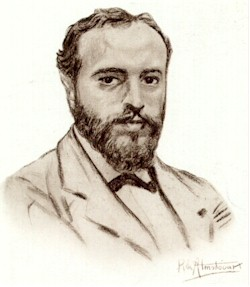

Ángel Ganivet (1865-1898)
Escritor y diplomático, su figura es considerada como un preludio de la Generación del 98. Su obra más importante es Idearium español, un tratado que se plantea el problema de la decadencia española. Ganivet cree hallar la respuesta a estas procupaciones en la determinación precisa de la inteligencia y el "alma" española, atributos que harán posible una nueva conquista, esta vez de carácter espiritual.